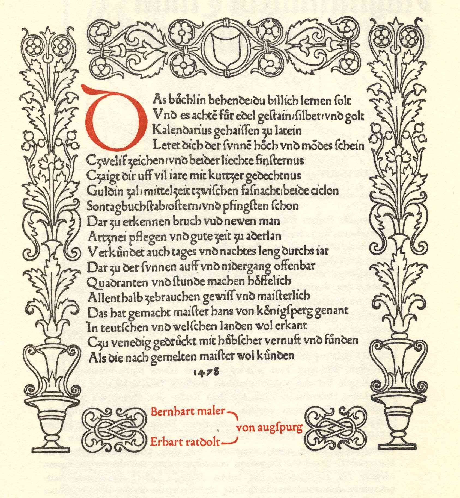

The scribe who copied this page based it on the title page of a 1478 edition of Regiomontanus’s Calendarium, even going so far as to replicate the date, printers’ names, and “von augspurg” at the bottom.
Regiomontanus, Calendarius (Venice: Bernhard Mahler and Erhard Ratdolt, 1478).